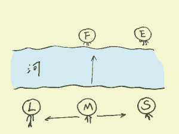

准确率98%的心理测验

有个男人叫M，他要过河去和未婚妻F相会结婚，但两人一河相隔，M必须要借船过河才能见到F，于是他开始四处找船。
这时见一个女子L刚好有船，M跟L借，L遇到M后爱上了他，就问：我爱上你了，你爱我吗？M比较诚实，说：对不起，我有未婚妻，我不能爱你。这么一来，L死活是不把船借给M，她的理由是：我爱你，你不爱我，这不公平，我不会借你的！
M很沮丧，继续找船，刚好见一位叫S的女子，就向她借船，S说：我借给你没问题，但有个条件，我很喜欢你，你是不是喜欢我无所谓，但你必须留下陪我一晚，不然我不借你。M很为难，L不借他船，S如果再不借他的话就过不去河与F相见了，据说这个地方只有这两条船。为了彼岸的未婚妻，他不得不同意了S的要求，与S有了一夜情。次日，S遵守承诺把船借给了M。
见到未婚妻F后，M一直心里有事，考虑了很久，终于决定把向L和S借船的故事跟F说了。可惜，F听了非常伤心，一气之下与M分了手，她觉得M不忠，不能原谅。M失恋了，很受打击。
这时他的生活里出现了位女子E，两人也开始恋爱了，但之前的故事一直让他耿耿于坏，E问M是不是有什么话要跟她说，于是，M一五一十地把他和L、S、F之间的故事讲了一遍。E听了后，说，我不会介意的，这些跟我没关系。
故事讲完了，问题来了，请点击把这几个人排列个次序，标准是你认为谁最好，谁第二，谁第三，第四，第五？这个M男也算在内的。建议不要想太复杂，也不需要考虑大众看法，你认为谁做得好就是好。
M
F
L
S
E